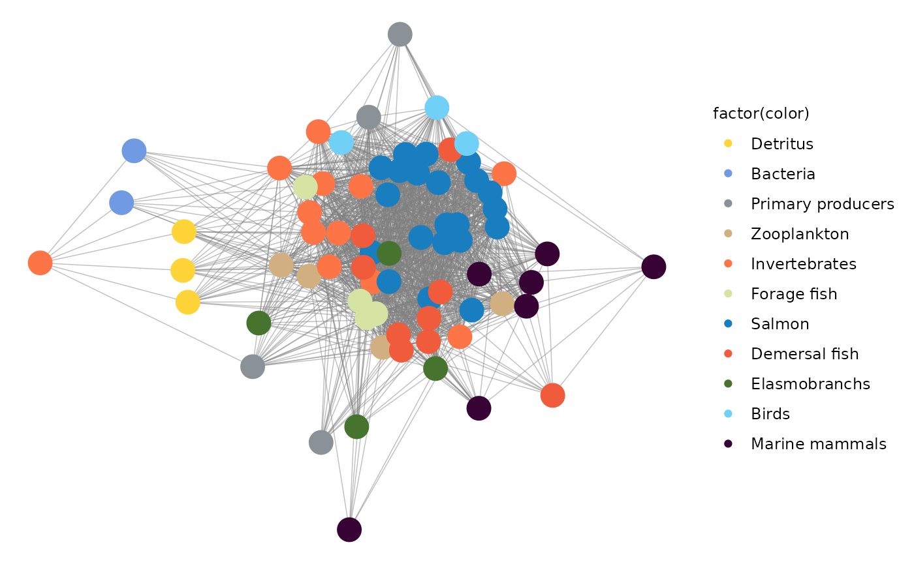

salmon_survival
salmon_survival.RmdPackage for the article Effect of multiple pressures on early marine survival of juvenile salmon in Puget Sound
Hem Nalini Morzaria-Luna, I.C. Kaplan, C.J. Harvey, M. Schmidt, E.A. Fulton, R. Girardin, and P. MacCready
install.packages("rnaturalearthhires", repos = "http://packages.ropensci.org", type = "source")## Installing package into '/tmp/RtmpaCIT1M/temp_libpath1a96525ef782a'
## (as 'lib' is unspecified)
library(pssalmonsurvival)Map of model extent in Puget Sound
file.name <- "amps_model_map.png"
make_map(file.name)## Reading layer `bgm_Puget_Sound_89b_0p0001_WGS84' from data source
## `/home/atlantis/pssalmonsurvival/shapefiles/bgm_Puget_Sound_89b_0p0001_WGS84.shp'
## using driver `ESRI Shapefile'
## Simple feature collection with 89 features and 10 fields
## Geometry type: POLYGON
## Dimension: XY
## Bounding box: xmin: -123.8533 ymin: 47.0343 xmax: -122.1955 ymax: 49.08208
## Geodetic CRS: WGS 84
## Reading layer `Puget_Sound_cities_WSG84' from data source
## `/home/atlantis/pssalmonsurvival/shapefiles/Puget_Sound_cities_WSG84.shp'
## using driver `ESRI Shapefile'
## Simple feature collection with 5 features and 8 fields
## Geometry type: POINT
## Dimension: XY
## Bounding box: xmin: -122.9007 ymin: 47.03787 xmax: -122.2021 ymax: 48.75955
## Geodetic CRS: WGS 84
Plot food web
#Plot model food web
data("ppreymatrix")
plot.name <- "ps_foodweb.png"
plot_foodweb(ppreymatrix, plot.name)## Registered S3 method overwritten by 'GGally':
## method from
## +.gg ggplot2## Scale for 'colour' is already present. Adding another scale for 'colour',
## which will replace the existing scale.
Model ensemble was developed with alternate parametrizations. Plot biomass trajectories based on simulations that run the model ensemble 30 years under constant fishing rates. We only use 6 model variants, 2:5 and 7:8 Model biomass comes from 30-year runs of the base models. There are 8 model variants that differ in invertebrate growth rate and vertebrate density dependence
## [1] 5
## [1] 1## [1] 2## [1] 3## [1] 4## [1] 5## [[1]]
##
## [[2]]
##
## [[3]]
##
## [[4]]
##
## [[5]]
Plot salmon survival for model ensemble, survival is defined as the proportion of age 1 salmon that survive to age 5, the cohort is lagged over time.
## [1] 2## Warning: Removed 8 row(s) containing missing values (geom_path).
## Removed 8 row(s) containing missing values (geom_path).## [[1]]## Warning: Removed 8 row(s) containing missing values (geom_path).
##
## [[2]]## Warning: Removed 8 row(s) containing missing values (geom_path).
Make forcings for model simulations, by scenario
Plot salmon survival for scenario results, survival is defined as the proportion of age 1 salmon that survive to age 5, the cohort is lagged over time.
## Rows: 5208 Columns: 16
## ── Column specification ────────────────────────────────────────────────────────
## Delimiter: ","
## chr (3): Code, Name, Long.Name
## dbl (13): model_ver, age_return, year_sim, return_nums, NumCohorts, migiobox...
##
## ℹ Use `spec()` to retrieve the full column specification for this data.
## ℹ Specify the column types or set `show_col_types = FALSE` to quiet this message.